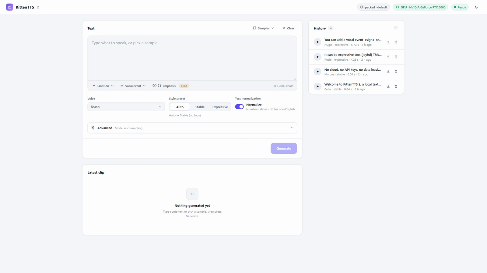

Bella
Neutral“Welcome to KittenTTS 2, a local text to speech studio that runs entirely on your own machine.”
A small web interface for the KittenTTS 2 speech model. Type a line, pick one of 47 voices, press Generate. Nothing leaves your computer, and there is no account or API key.
Unofficial project. Not affiliated with or endorsed by KittenML or Stellon Labs.

A local server and a single page. It loads the model once, then turns text into speech on your machine.
After the first model download, it runs without an internet connection. Clips are saved as .wav files in a local folder.
Runs on an NVIDIA card with CUDA, using about 4.7 GB of video memory. It falls back to the CPU, slowly.
English voices with different characters, plus voices for nine other languages. Each clip can be played, downloaded or deleted from the history list.
Real output from the app on an RTX 3060. Each clip was generated once and is shown as it came out, apart from trimmed silence and MP3 compression.
“Welcome to KittenTTS 2, a local text to speech studio that runs entirely on your own machine.”
“No cloud, no API keys, no data leaving your computer. Everything runs offline on your GPU.”
“Oh, this is the best news I've heard all year!”
“I keep thinking about the last time we talked.”
“You lied to me. You looked me in the eye and lied.”
The mood in these samples comes from the voice, not from markup. Each voice is built from a reference recording made in that mood. The model also accepts emotion tags, vocal events and emphasis markers, but they are a beta feature of the model and in our tests they made little or no audible difference, so none are used here.
Setup has two steps: get the code, then run setup.bat once. After that you only need start.bat.
nvidia-smi to check).git clone https://github.com/UsamaKhanGT4/kitten-tts-webui
cd kitten-tts-webuisetup.bat (or double-click it). It takes 5 to 15 minutes and downloads a few GB. If it prints a GPU warning, update your NVIDIA driver and run it again.start.bat. Your browser opens http://127.0.0.1:7860/. The first start downloads about 2.1 GB of model files, so give it a few minutes.